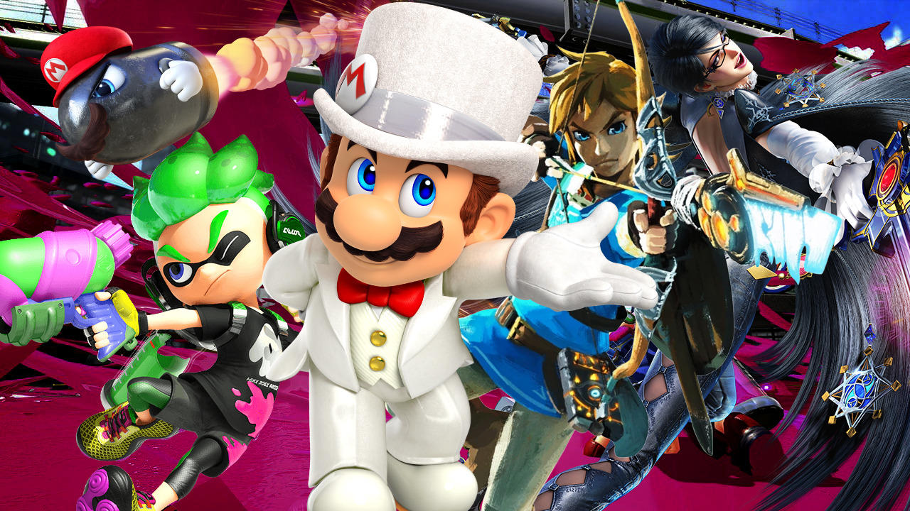

But what are some of your favorite weapons in Far Cry 5? Let us know in the comments below. If you're interested in our other Far Cry 5 guides, be sure to check out our feature highlighting nine tips we wish we knew before starting. In other news, Ubisoft announced Far Cry 5's Season Pass, which takes you to settings like Mars and the Vietnam War. We also recently learned more about how to access the game's live events and the special rewards you earn by completing them.
In this feature, we've collected the best PS4 games so far. This includes many of the games that have received an 8 or higher on GameSpot, and we've prioritized games that were nominated for our end-of-year Best PS4 Game lists. Check out our choices for the best games released on the PS4. And with the console's library continuing to expand, make sure to check back often as we update this feature over the coming weeks and months.
For more PS4 games on a budget, see our roundups of the best cheap games on PS4, and make sure to check out our gallery of the PS4 exclusive games confirmed for 2018 as well as the biggest PS4 games of 2018 for everything coming to the console.

It's also worth noting that many of the weapons you see in this feature are Prestige Weapons, which are higher-priced special skinned versions of normal weapons you can purchase with in-game money or real money. If you'd prefer, you can purchase a standard non-skinned equivalent of the same weapon in the shop for cheaper and without the fancier attachments. Regardless of which version of each weapon you choose to get, we stand by their quality and functionality.
This includes games that have received a score of 8 or higher on GameSpot since the console's release, as well as reviews for new games and updates to reviews of older games that were ported to Switch. Check out our choices for the best games released on the Switch. And with the console's library continuing to expand, make sure to check back often as we update this feature over the coming weeks and months.For an analysis of Nintendo Switch's first year, be sure to read our retrospective feature discussing the console's various successes and failures. In addition, you can also check out our features detailingall the Wii U games we ported to Switch, 13 things we want to see from the console, and the best Switch games under $20.
But what are some of your favorite weapons in Far Cry 5? Let us know in the comments below. If you're interested in our other Far Cry 5 guides, be sure to check out our feature highlighting nine tips we wish we knew before starting. In other news, Ubisoft announced Far Cry 5's Season Pass, which takes you to settings like Mars and the Vietnam War. We also recently learned more about how to access the game's live events and the special rewards you earn by completing them.
Mentioning The Bard's Tale may conjure up images of the snarky comedy game from the mid-2000s, but developer IinXile's second attempt at the franchise (third if you count the VR offshoot The Mage's Tale) attempts to be much more faithful to the spirit of the original hardcore RPG series.
In this gallery, we've compiled a list of some of the most interesting games we've played during GDC 2018. After exploring the GDC show floor and the conference's surrounding events, which includes Double Fine's Day of the Devs and an assortment of indie games from the The MiX event--we've narrowed things to some of the most evocative and exciting games we played during GDC 2018. Here are 25 games coming to PS4, Xbox One, PC, and Switch--which are expected to see release this year, or early 2019.